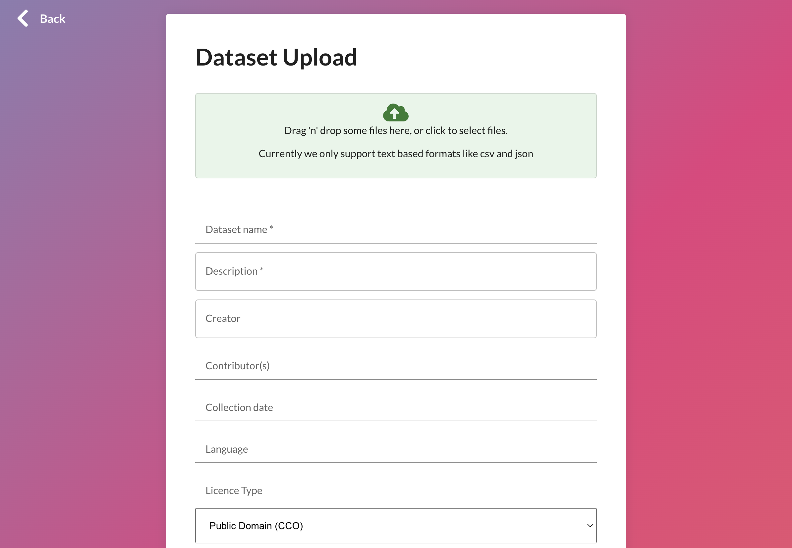

It’s easy to share machine learning datasets through OpenML, and doing so is a great way to make your dataset widely available to the machine learning community:
Allow anyone to easily import your dataset into AI libraries, perform benchmarks, and share models.
Make your dataset Findable, Accessible, Interoperable and Reusable through FAIR and Croissant standards.
Easily explore your dataset through dashboards and automated analyses.
You can share your data via code (recommended!) or via a web UI.
We believe that data sharing should be as frictionless and automated as possible. That's why OpenML has created libraries that automate both the uploading and downloading of datasets for you. If you can load a dataset in common data structures (e.g. a pandas dataframe), you can upload it to OpenML in a few lines of code, and OpenML will automatically store it in efficient data formats. Vice versa, you can download any OpenML dataset directly into common machine learning libraries. Hence, you never have to worry about data formatting or maintaining data loaders.
importpandasaspdimportopenmlasoml# Load your data (eg. a pandas dataframe)df=pd.DataFrame(data,columns=attribute_names)# Add basic infomy_data=oml.datasets.functions.create_dataset(data=df,name="mydataset",licence="CC0",description="A dataset from me for you...")# Set your API key (can also be in a config file)openml.config.apikey='YOURKEY'# Share the dataset on OpenMLmy_data.publish()
library(mlr3oml)# Create any R dataframe df<-read.csv("your_file.csv")# Share the dataset on OpenMLpublish_data(df,# Any data.frame()name,description,license=NULL,default_target=NULL,citation=NULL,row_identifier=NULL,ignore_attribute=NULL,original_data_url=NULL,paper_url=NULL,test_server=test_server_default(),api_key=NULL)
importorg.openml.apiconnector.io.ApiConnector;importorg.openml.apiconnector.xml.UploadDataset;publicclassOpenMLDatasetUpload{publicstaticvoidmain(String[]args){try{// Initialize API connection with your API keyStringapiKey="your_openml_api_key";// Replace with your API keyApiConnectoropenml=newApiConnector(apiKey);// Path to the dataset file (e.g. a CSV)StringfilePath="path/to/your/dataset.csv";// Metadata for the datasetStringname="MyDataset";Stringdescription="This is a test dataset uploaded via Java API";Stringformat="csv";// Upload datasetUploadDatasetresponse=openml.dataUpload(filePath,name,description,format);// Print uploaded dataset IDSystem.out.println("Dataset uploaded successfully with ID: "+response.getId());}catch(Exceptione){e.printStackTrace();}}}
More languages
Would you like to add support for your favourite language? Get it touch. We're happy to help you get started!
Our libraries support commonly used rich data structures. First load your data in your preferred way, add information as needed, then publish.
For Python, here are some basic examples. For more examples, see the python API docs.
importpandasaspdimportopenml# Load your data (eg. a pandas dataframe)df=pd.DataFrame(data,columns=attribute_names)# Extra information, e.g. descriptions and citations# This can also be updated later.description=("The weather problem is a tiny dataset that we will use repeatedly""to illustrate machine learning methods. In this case there are four ""attributes: outlook, temperature, humidity, and windy. ""The outcome is whether to play or not.")citation=("I. H. Witten, E. Frank, M. A. Hall""Data mining practical machine learning tools and techniques, ""Third edition. Morgan Kaufmann Publishers, 2011")# Create the datasetmy_dataset=openml.datasets.create_dataset(data=df,# The dataname="Weather",# Dataset namedescription=description,# Description (can be long)creator="I. H. Witten, E. Frank, M. A. Hall",contributor=None,# Creators and contributorscollection_date="01-01-2011",# When was data gatheredlanguage="English",# Data languagelicence="CC0",# Any CC licencedefault_target_attribute="play",# Feature with the correct labelsrow_id_attribute=None,# Row ID column (will be dropped before training)ignore_attribute=None,# Other columns to be dropped before trainingcitation=citation,# Paper citationsattributes="auto",# Automatically infer column typesversion_label="1.0",# Optional version label (for your own reference)original_data_url=None,# Link to original location/host of the datasetpaper_url=None,# Link to a paper describing the dataset)# Set your API key (can also be in a config file)openml.config.apikey='YOURKEY'# Share the dataset on OpenMLmy_dataset.publish()# New webpage created for this datasetprint(f"Dataset now availabel at: {my_dataset.openml_url}")
importnumpyasnpimportopenmlasoml# Your numpy dataX,y=data,target# Merge and add column informationdata=np.concatenate((X,y.reshape((-1,1))),axis=1)attributes=[(attribute_name,"REAL")forattribute_nameinattribute_names]+[("class","INTEGER")]# Extra information, e.g. descriptions and citations# This can also be updated later.description=("The weather problem is a tiny dataset that we will use repeatedly""to illustrate machine learning methods. In this case there are four ""attributes: outlook, temperature, humidity, and windy. ""The outcome is whether to play or not.")citation=("I. H. Witten, E. Frank, M. A. Hall""Data mining practical machine learning tools and techniques, ""Third edition. Morgan Kaufmann Publishers, 2011")# Create the datasetmy_dataset=create_dataset(data=df,# The dataname="Weather",# Dataset namedescription=description,# Description (can be long)creator="I. H. Witten, E. Frank, M. A. Hall",contributor=None,# Creators and contributorscollection_date="01-01-2011",# When was data gatheredlanguage="English",# Data languagelicence="CC0",# Any CC licencedefault_target_attribute="play",# Feature with the correct labelsrow_id_attribute=None,# Row ID column (will be dropped before training)ignore_attribute=None,# Other columns to be dropped before trainingcitation=citation,# Paper citationsattributes=attributes,# Attributes and type ('auto' doesn't work for numpy)version_label="1.0",# Optional version label (for your own reference)original_data_url=None,# Link to original location/host of the datasetpaper_url=None,# Link to a paper describing the dataset)# Set your API key (can also be in a config file)openml.config.apikey='YOURKEY'# Share the dataset on OpenMLmy_dataset.publish()# Webpage created for this datasetprint(f"Dataset now availabel at: {my_dataset.openml_url}")
importnumpyasnpimportopenmlasoml# Your sparse datasparse_data=coo_matrix(([0.0,1.0,1.0,1.0,1.0,1.0,1.0],([0,1,1,2,2,3,3],[0,1,2,0,2,0,1])))# Column names and typescolumn_names=[("input1","REAL"),("input2","REAL"),("y","REAL"),]# Create the datasetmy_dataset=create_dataset(data=df,# The dataname="Weather",# Dataset namedescription=description,# Description (can be long)creator="I. H. Witten, E. Frank, M. A. Hall",contributor=None,# Creators and contributorscollection_date="01-01-2011",# When was data gatheredlanguage="English",# Data languagelicence="CC0",# Any CC licencedefault_target_attribute="play",# Feature with the correct labelsrow_id_attribute=None,# Row ID column (will be dropped before training)ignore_attribute=None,# Other columns to be dropped before trainingcitation=citation,# Paper citationsattributes=column_names,# Attributes and type ('auto' doesn't work for numpy)version_label="1.0",# Optional version label (for your own reference)original_data_url=None,# Link to original location/host of the datasetpaper_url=None,# Link to a paper describing the dataset)# Set your API key (can also be in a config file)openml.config.apikey='YOURKEY'# Share the dataset on OpenMLmy_dataset.publish()# Webpage created for this datasetprint(f"Dataset now availabel at: {my_dataset.openml_url}")
More data structures
Would you like to add support for your favourite data structures? Get it touch. We're happy to help you get started!
You control the data formatting
Data is often stored in inefficient ways, over many files, sometimes in obscure data formats, and sometimes you need domain knowledge to load it correcty.
That's why we encourage you do load the data in the correct modern way, using the appropriate data structures, and share it as such.
Our libraries can then transfer and store it efficiently (e.g. in Parquet), and easily load it later on. This also means that data loaders don't break as technologies evolve.
In the examples above, you can share any data supported by the data structure. These can easily hold complex numeric data, strings, text, and links to images or files. For large and/or multi-modal datasets with many local files, we recommend the following approach:
Create a dataframe with all the dataset information, and columns with paths to local files
Create a folder with all the local files (e.g. images, video, audio) according to the paths in main dataframe
Upload the main dataframe using the method above
Upload the folder with all the local files using an appropriate data transfer tool. Contact us, we're happy to help with this.
More automation coming
We're working on an automated procedure for the last step in our next API release. Watch this space :). For now, we'll gladly assist you with the manual step.
First, you can create a new version of a dataset by creating another dataset with the exact same name. OpenML will automatically create a new version of that dataset.
You can also edit the metadata of existing dataset. You can only edit non-critical meta-data fields, such as the dataset description, creator, contributor, collection_date, language, citation, original_data_url, and paper_url. Previous versions of the metadata are stored and versioned. The best way do this is via the Python Dataset Edit API. You can also edit the metadata via the website by going to the webpage of that dataset and clicking the 'edit' button. This is most convenient for editing the dataset description in markdown, including previews.
data_id=edit_dataset(128,# dataset ID description="A more complete dataset description",creator="J.Appleseed",collection_date="2017",citation="On dataset creation. DMLR, 2017",language="English",)
Protected fields
Certain fields are protected (default_target_attribute, row_id_attribute, ignore_attribute) since changing them will affect models trained on the dataset. Changing these fields is allowed only for the dataset owner, and only if the dataset does not yet have any tasks associated with it.
You can 'fork' an existing datasets, which creates a copy of the dataset with you as the owner. This can be useful, for instance, to correct critical mistakes or adopt orphaned datasets. Use this API only if you are unable to edit the original dataset. After the dataset is forked, you can edit the new version of the dataset as you like.
# Forks dataset with ID=1 and returns the forked dataset IDdata_id=fork_dataset(1)# You can now edit the datasetdata_id=edit_dataset(data_id,default_target_attribute="shape")
Sign into the OpenML website. Sign up if you do not have an account yet.
Click the 'plus' icon on the top right, and then 'New dataset'
Drag-and-drop a dataset file or click the cloud icon to open a file browser.
Supported file formats are csv, excel, sql, json, parquet.

Fill in the remaining information. The dataset name, description, and licence are required.
Click 'Upload dataset'. This will start the upload and redirect you to the new dataset page when done.
Limitations
Web UIs have natural limitations. We use pandas in the background and therefore only support any file format that pandas supports (csv, excel, sql, json, parquet). We also recommend not uploading datasets larger than 2GB via the web UI. If any of this is a problem, please upload your data via code or contact us!